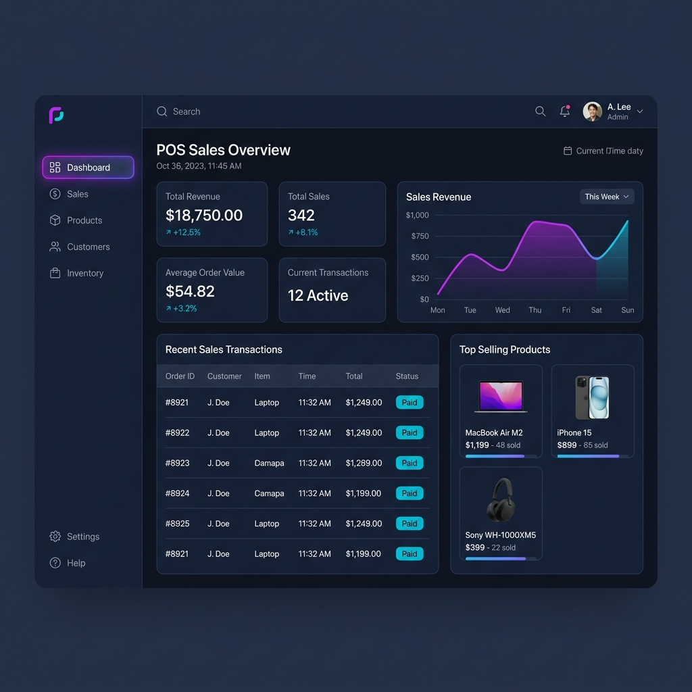

Producción LocalSistema de Ventas POS
Sistema POS desarrollado a medida y puesto en producción en entorno local. Facilita el control diario de transacciones comerciales, gestión inteligente de inventario y visualización de reportes de ventas.